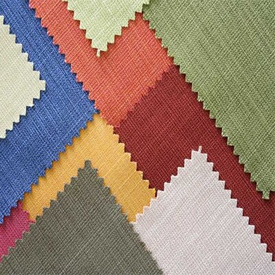
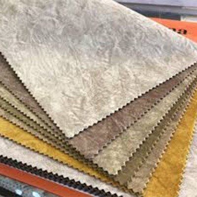

اطلاعاتی در مورد پارچه مبلی
مطمئنا در انتخاب یک مبل بعد از طرح و مدل مهمترین فاکتور برای خریداران طرح و جنس پارچه مبل است. از آنجایی که مبل یک وسیله مصرفی است، کیفیت اجزای تشکیل دهنده آن به ویژه رویه مبل که بیشترین تماس را با بدن داشته و در معرض آسیب و سایش قرار می گیرد می تواند نقش مهمی در استحکام و دوام مبل داشته باشد.
به گزارش ایسنا، بنابر اعلام مبلمان محمدی، در این متن به تفصیل در مورد پارچه مبلی به شما عزیزان توضیحاتی را ارائه می دهیم.
اهمیت پارچه مبلی
پارچه مبل از چند جهت دارای اهمیت است نخست این که یکی از فاکتورهای دوام مبل، پارچه آن است، در صورتی که پارچه انتخابی دوام خوبی مقابل سایش و فشار نداشته باشد، چهار چوب مبلمان هرچقدر هم که محکم و با کیفیت باشد نمی تواند از جلوه ناخوشایندی که پارچه رنگ و رو رفته به مبل می دهد بکاهد، بنابراین در انتخاب پارچه باید در وهله نخست به کیفیت آن توجه کرد. نکته مهم بعدی در انتخاب، طرح و رنگ پارچه است، زیباترین مبل ها هم در صورتی که از نظر طرح و رنگ با دکوراسیون منزل شما هماهنگ نباشد، جلوهای نخواهد داشت، پس باید به این مسئله توجه داشت و پارچه ای را انتخاب کرد که از نظر تم رنگی و طرحی که دارد بیشترین هم خوانی را با اجزای دکوراسیون منزل داشته باشد.
نکته مهم بعدی در انتخاب تناسب کاربرد پارچه با مبل است. به طور مثال در مبلهای راحتی باید از پارچه هایی استفاده شود که به راحتی لک نشوند، در مقابل اصطکاک و سایش مقاومت خوبی داشته باشند، تراکم مناسبی داشته و به راحتی تمیز شوند، چرا که مبل راحتی بیشترین مصرف را در منزل دارد و ساعات طولانی افراد روی این مبلها می نشینند یا حتی گاهی برای چرت روزانه روی آنها دراز می کشند یا هنگام صرف غذا و نوشیدنی از مبل راحتی استفاده می کنند، بنابراین می توان گفت که این مبل در معرض آسیب قرار دارد و در صورتی که به موارد یاد شده دقت نکرده باشید خیلی زود پارچه مبل شما زیبایی و تمیزی خود را از دست می دهد.
بررسی طرح و بافت پارچه

شاید فکر کنید که این مسئله دارای اهمیت زیادی نیست اما باید بگوییم که یکی از عوامل تاثیرگذار در زیباتر دیده شدن مبلمان منزل همین بافت پارچه مبل است. به طور مثال در فضاهای کوچک بهتر است از مبلمانی با پارچههای درشت بافت استفاده کنید، این نوع پارچه ها فضا را بزرگتر نشان می دهند، برای فضاهای بزرگتر انتخاب پارچههای ریزبافت و ظریف مثل پارچه های کوبیده یا مخمل مناسب تر است.
بررسی چند نمونه پارچه مبلی

پارچه مبلی مخمل بافت محکم و با دوامی دارد چرا که فقط به صورت افقی بافته نمی شود . بافت پارچه مخمل نرم و مرتب است و موجب می شود این نوع پارچه دوام و استحکام بیشتری داشته باشد . یکی از فواید پارچه مبلی مخملی این است که وقتی به آن دست می زنید نرمی آن را به وضوح احساس خواهید کرد . همچنین نوع این بافت طوری است که تمیز کردن پارچه را نیز ساده تر می کند . پارچه مبلی مخمل بیشتر در منازل شیک و مدرن استفاده میگردد و مخصوص خانوادههایی است که می خواهند دارای یک مبل خاص و تک باشند.
پارچه چرمی یک انتخاب بسیار کلاسیک و لاکچری است، این مدل پارچهها بیشتر برای مبلمان اداری و رسمی مورد استفاده قرار می گیرند، مهمترین ویژگی این پارچه ها نگهداری و تمیز کردن آسان است، معمولا در مبلمان چستر از پارچه مبل چرمی استفاده می شود. البته باید مراقب باشید که اشیاء نوک تیز و برنده روی سطح پارچه چرمی مبل شما آسیبی ایجاد نکنند.
چرم پارچه مبلی یکی از نرم ترین و مدرن ترین انواع پارچه مبلی است. چرم پارچه در برابر لکه مقاوم است و به خاطر بافتی که دارد هیچ چیز به داخل آن نفود نمی کند و همین موجب می شود تمیزکردن آن به راحتی با یک دستمال امکان پذیر باشد. چرم پارچه مقاوم و مستحکم است اما در عین حال می تواند در برابر برخورد با اجسام تیز آسیب پذیر باشد.
پارچه مبلی ساتن بیشتر در مبل های کلاسیک و سلطنتی استفاده می شود و دارای تنوع بالایی در طرح و رنگ هستند و ضخامت بیشتری نسبت به پارچه های مخمل دارند، اما از آنجایی که این پارچه حالت کشسانی زیادی ندارد و به همین دلیل برای مبل های راحتی انتخاب مناسبی نیست.